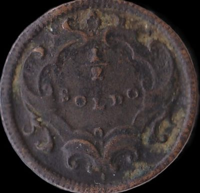

Home
Italia
Stati Preunitari
Principato Vescovile di Trento
Principato Vescovile di Trento
Clicca sulle monete per vedere il retro
½ Soldo

1739
Home
Italia
Stati Preunitari
Principato Vescovile di Trento